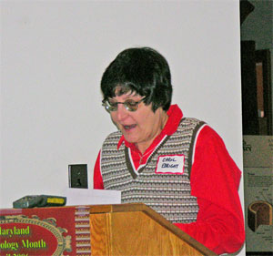
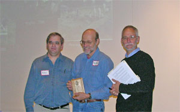
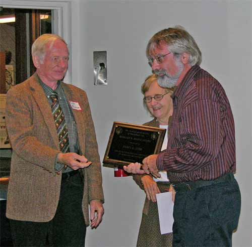
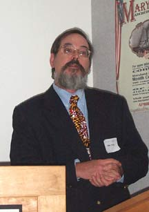
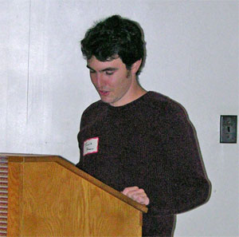
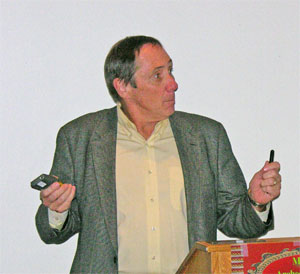
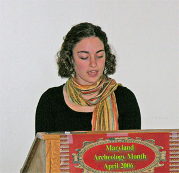
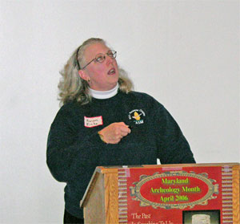

|
 |
Welcoming Remarks: Stephen Israel,
Central Chapter |
|
|  |
ASM Business Meeting |
 |
Roy Brown receives a plaque in recognition of his
support to the Field Session Committee. |
| |
|
 |
Carol Ebright hands the gavel to new ASM President, John Fiveash. |
|
|  |
William B. Marye Award
Tyler Bastian and Nancy Geasey present
the William B. Marye award to Jim Gibb. |
|
 |
CAT Graduation |
Dan Coates, Northern Chesapeake Chapter, became the
most recent graduate of the Certified Archeological Technician
Program. His
certificate was presented by Beth Ragan, CAT Chairman. |
|
|  |
Frederick M. Stiner Memorial Lecture:
“The First Chapels of St. Mary’s City”- Silas
Hurry. This paper will review the archaeological and historical
data of the Roman Catholic chapels built in St. Mary’s City
in the 17th century. Rather than focus on the brick chapel
now undergoing reconstruction in St. Mary’s City, the presentation
will explore the chapel or chapels that proceeded it and the
domestic occupation associated with the earlier structures. |
|
|  |
“Old Baltimore Site Excavations” - Travis
Shaw. |
|
|  |
“A History of Longwood: From the 18th-Century
into the 21st-Century” - Lee Preston. This paper is
on the Longwood Archaeology and Historical Research. It includes
pictures of the archaeology (UPAG members, HCC students) and
the information gained from Census data at the Hall of Records.
|
|
 |
“A Confluence of Three Cultures”: The
creation of an archaeological exhibit at Mount Calvert - Don
Creveling. Examine the process of creating a public exhibit
located in a late 1700s brick plantation house. The exhibit describes
8,000 years of American Indian presence, the development of colonial
Charles Town, Prince George’s County’s first seat of government
from 1696 – 1721, and the 1700 and 1800’s tobacco plantation.
The park also features a public archaeology program that includes
tours and a volunteer program. |
|
|  |
“ Preliminary Report on the Smith’s St.
Leonard Site” - Jessica L. Grow. The Smith’s St. Leonard
Site is located at the Jefferson Patterson Park and Museum. The
site was originally the home of Richard Smith, Jr. who built
his house on a bluff overlooking the Patuxent River and St. Leonard’s
creek in 1711. By 1754, the house and all of its outbuildings
had become abandoned and started to crumble. Eventually, the
site was turned into cultivated farm land. Since 2002, Jefferson
Patterson Park and Museum has hosts a public archaeology program
and used the Smith’s St. Leonard Site as a program site. Volunteers
have helped to excavate the site and process the artifacts. Excavations
have been done in the main house, kitchen, and slave quarters
areas, as well as a trash pit and a building of unknown use.
This preliminary report is a culmination of the known history
of the site and what work has been done there so far. |
|
|  |
“The Camp at Muddy Branch at Blockhouse
Point” - Vivian Eiche. We will present a brief history
of the Camp at Muddy Branch and its importance during the Civil
War. Included will be some of the archival research, pictures
of artifacts, and the excavation done at the Soldier's camp at
Blockhouse Point to date.
|
|
|
“Clarke Farm: The Search for ‘Indian
Town’ and what we found out”- Stephen Israel. This
paper will review the historical records for an ‘Indian Town’
site and the Chapter’s field survey to verify the site. The presentation
will conclude with an examination of the Clarke Farm’s recent
history, landscape conditions and scattered lithic surface finds
and their value as an archeological research resource. |
|
| |
Tour of the Oregon Ridge Iron Furnace town,
its history and the Tenant House Museum use as an educational
tool.- Dr. George Brauer. George Brauer will share
some of the background on the history of Oregon Ridge Iron Furnace
and town and the use of the Tenant House Museum as an educational
tool. |
|